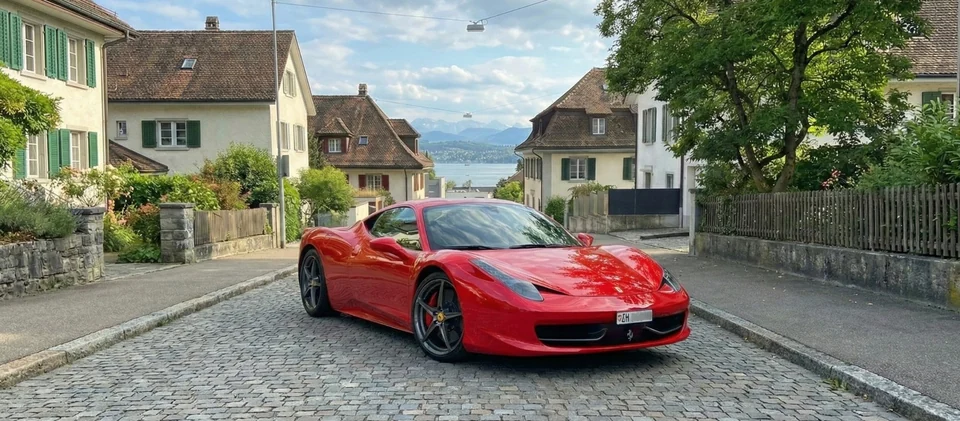
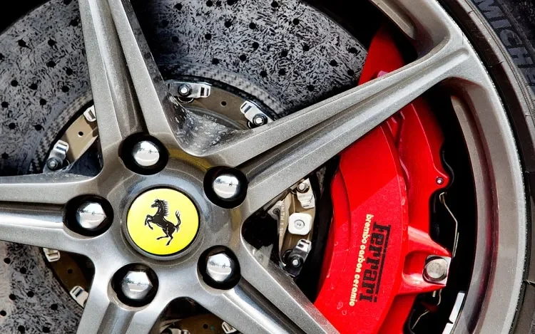
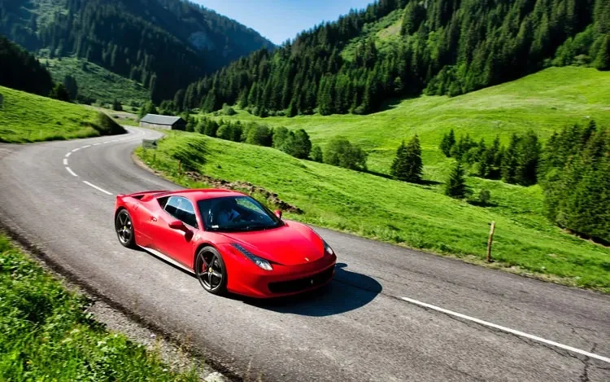
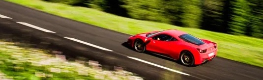

Ferrari 458 Italia in Switzerland, the signature driving experience
A Ferrari 458 Italia experience in Switzerland works best when the pace is calm, the route is curated, and every detail is handled with quiet precision.

The Ferrari 458 Italia remains one of the clearest modern Ferraris to drive. It does not impress because it tries to do everything. It feels special because every input feels honest. The throttle answers immediately, the steering is alive in your hands, and the naturally aspirated V8 builds its voice in a way that still feels rare on today’s roads.
People often search for a Ferrari 458 Italia rental in Switzerland or a Ferrari experience from Zurich. What matters in practice is not only the car. It is how the whole day is designed. Pickup should feel calm, the route should suit the season, and the return should feel as polished as the first impression.
Why the Ferrari 458 Italia still matters
Many newer performance cars are faster on paper, yet the 458 Italia remains memorable because it delivers clarity instead of noise. You feel the front axle load up, you sense the chassis settle into a corner, and you hear the engine rise without filters. That combination makes even a measured pace feel rich and engaging.
It also suits Switzerland particularly well. Swiss roads reward balance more than brute force. Tight village sections, elegant lakeside roads, and fast flowing mountain stretches all ask for precision and composure. The 458 gives you both. It feels compact enough to place neatly and dramatic enough to turn any well chosen road into an occasion.

Why Switzerland is the right setting
Switzerland gives a Ferrari 458 experience something many destinations struggle to match. Variety comes quickly. Within a sensible driving window, you can move from calm lakeside scenery to higher elevation roads, from clean modern architecture to classic alpine viewpoints. The day never needs to feel forced.
Timing matters just as much as geography. Early mornings in summer feel lighter, cooler, and more cinematic. Autumn tends to be the most photogenic season, with softer light and stronger colour contrast. Spring offers freshness and clarity. Even in winter, carefully chosen lower altitude roads can still create a refined Ferrari day in Switzerland.
| Season | Best window | What it feels like | Our note |
|---|---|---|---|
| Spring | Late morning to early afternoon | Fresh air, bright lakes, clean visibility | Ideal for mixed loops with a café stop and viewpoint |
| Summer | Early morning and golden hour | Long days, vivid scenery, more traffic later | The best starts are early and unhurried |
| Autumn | Late morning | Warm tones, quieter roads, strong contrast | The most photogenic season for the 458 |
| Winter | Midday | Low sun, crisp light, selective route choice | We focus on safe roads with visual impact |

How we shape the hosted experience
The car may be the headline, but luxury is usually recognised in quieter moments. Clear communication, transparent written confirmation, a calm handover, and a route that respects your time are what make a Ferrari 458 Italia experience in Switzerland feel complete rather than improvised.
Before the drive
We align on date, duration, and the type of atmosphere you want. Some guests want a scenic half day with photo stops. Others want a cleaner, more driving focused loop from Zurich with fewer interruptions.
- Clear confirmation and transparent terms
- Suggestions for timing, stops, and road style
- Pickup options around Zurich and on request beyond
During the drive
The 458 feels best when the day has rhythm. A quiet start, a road that opens naturally, then pauses that feel intentional rather than rushed. The goal is not only to drive the car, but to enjoy a day that feels coherent from start to finish.
- Balanced pacing with scenic variety
- Photo friendly viewpoints and discreet stops
- A relaxed return plan that never feels abrupt
Route ideas from Zurich and beyond
The most memorable Ferrari routes do not always need the longest distance. What matters more is the shape of the drive. A clean opening section, a middle stretch with genuine flow, and an ending that feels like arrival usually create a stronger memory than a day packed with too many checkpoints.
That is why a Ferrari experience from Zurich can work beautifully even within a modest time window. Lakeside roads add elegance. Moderate climbs add texture and perspective. Longer pass sequences create the full grand touring feeling when weather and timing allow it.
| Duration | Route style | Ideal mood | Good for |
|---|---|---|---|
| 2 to 3 hours | Lakeside sweep with one scenic climb | Elegant, calm, photogenic | First time guests, couples, surprise gifts |
| Half day | Mixed roads with one signature viewpoint | Balanced, cinematic, relaxed | Celebrations, premium photos, special occasions |
| Full day | Pass and valley sequence with long flowing sections | Immersive, dynamic, memorable | Enthusiasts who want the full story of the car |

What to expect on the day
The handover should feel calm and precise. You receive a clear briefing, a moment to settle into the driving position, and guidance that fits your confidence level. Some guests prefer a gentle opening section. Others want to head straight to the most rewarding roads. Both approaches can work when the day is planned properly.
The key is mindset. The 458 rewards smooth, deliberate inputs. Driven with restraint, it feels expensive. Driven at the right moments, on the right road, it feels unforgettable.
| Bring | We provide | Recommended |
|---|---|---|
| Valid driving licence | Clear written confirmation | Comfortable footwear for pedal feel |
| Identification | Concierge style support before and during | A flexible schedule for photo stops |
| Seasonal layers | Suggested route style on request | An early start for quieter roads |
Frequently asked questions
Is this only about the car, or about the full day?
It is about both. The Ferrari 458 Italia is the centrepiece, but the day is designed as a complete experience with timing, route suggestions, and a calm handover that suits Switzerland.
Where does the experience usually start?
Many guests begin around Zurich because it combines convenience with quick access to elegant roads. Depending on the date and arrangement, other pickup solutions can also be discussed.
What kind of route works best for the 458?
The best routes combine flow, visibility, and scenery. Lakeside sections, moderate climbs, and carefully chosen Swiss mountain roads usually suit the 458 better than crowded urban traffic or overly aggressive itineraries.
Explore the engine, design and history in our Ferrari 458 Italia model guide.